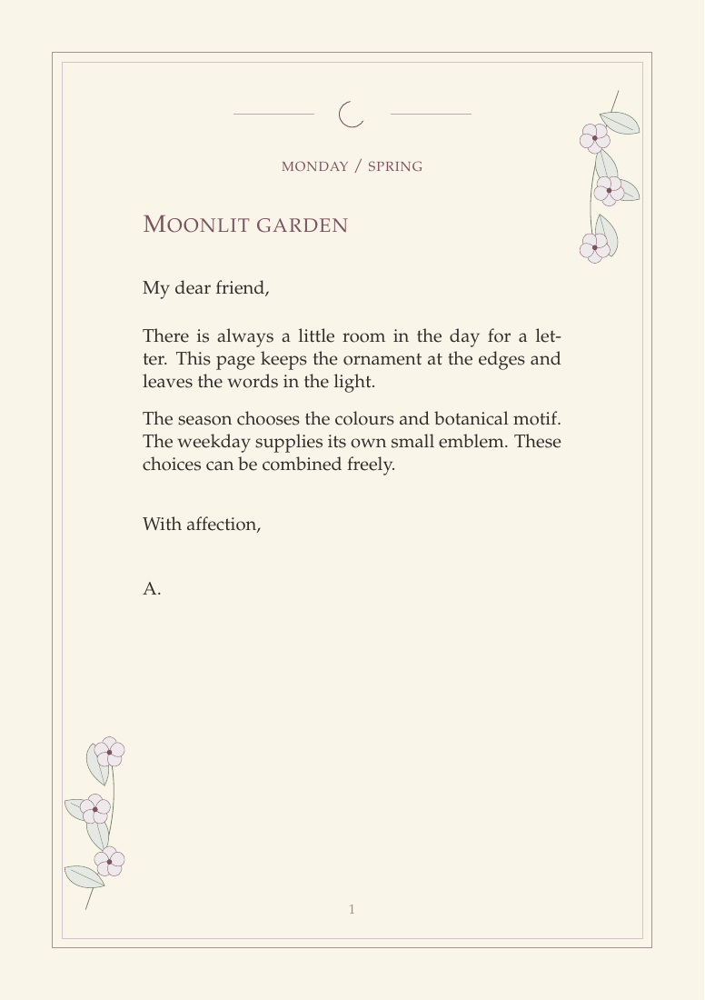
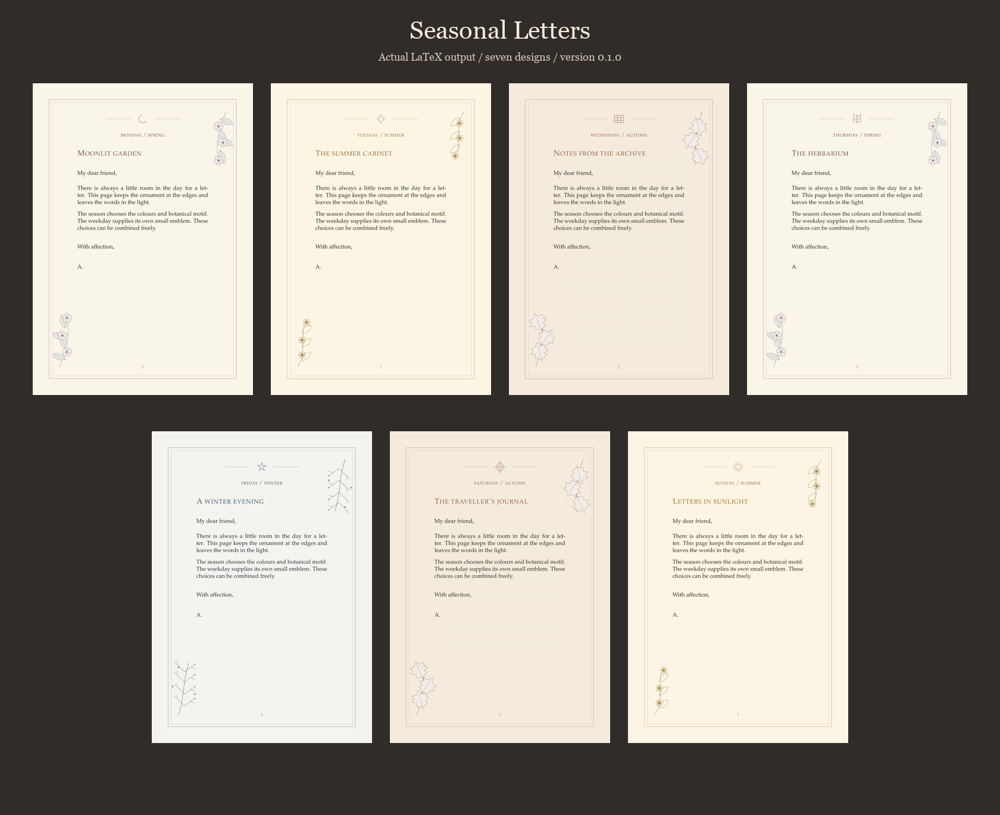

LATEX STATIONERY · VERSION 0.1.0
Letters for
every season.
Write your letter once. Change the season, weekday emblem or paper style with a few LaTeX options.

THE SAMPLE BOOK
Four seasons, seven weekday emblems
Combine any season and weekday for 28 designs. Choose plain, ruled or grid paper separately.

View the full-size examples ↗QUICK START
From LaTeX source to a letter
- Get the files. Download the package ZIP, unzip it, and put
seasonalletter.clsandseasonalletters.stybeside yourletter.tex. - Choose a design. Change the options in
\SeasonalSetup. The season sets the palette and corner motif. The weekday selects the emblem. - Compile. Run pdfLaTeX, XeLaTeX or LuaLaTeX twice so the page decorations settle into position.
\documentclass[a4paper]{seasonalletter}
\SeasonalSetup{season=autumn,weekday=wednesday,paper=grid}
\begin{document}
\begin{SeasonalLetter}
\SeasonalHeading{From the reading room}
\SeasonalOpening{Dear friend,}
There is always a little room in the day for a letter.
\SeasonalClosing{With warm wishes,}{Alex}
\end{SeasonalLetter}
\end{document}Long letters. Text flows across pages. The first page gets the full design and later pages use lighter decoration by default.
Printing. Add output=print to use white paper and grey ornaments. The package omits ruling and background images in this mode.